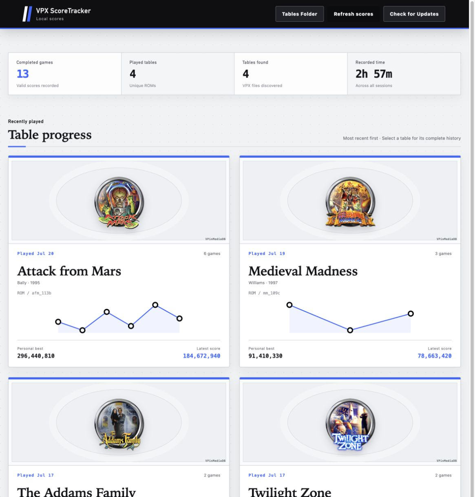
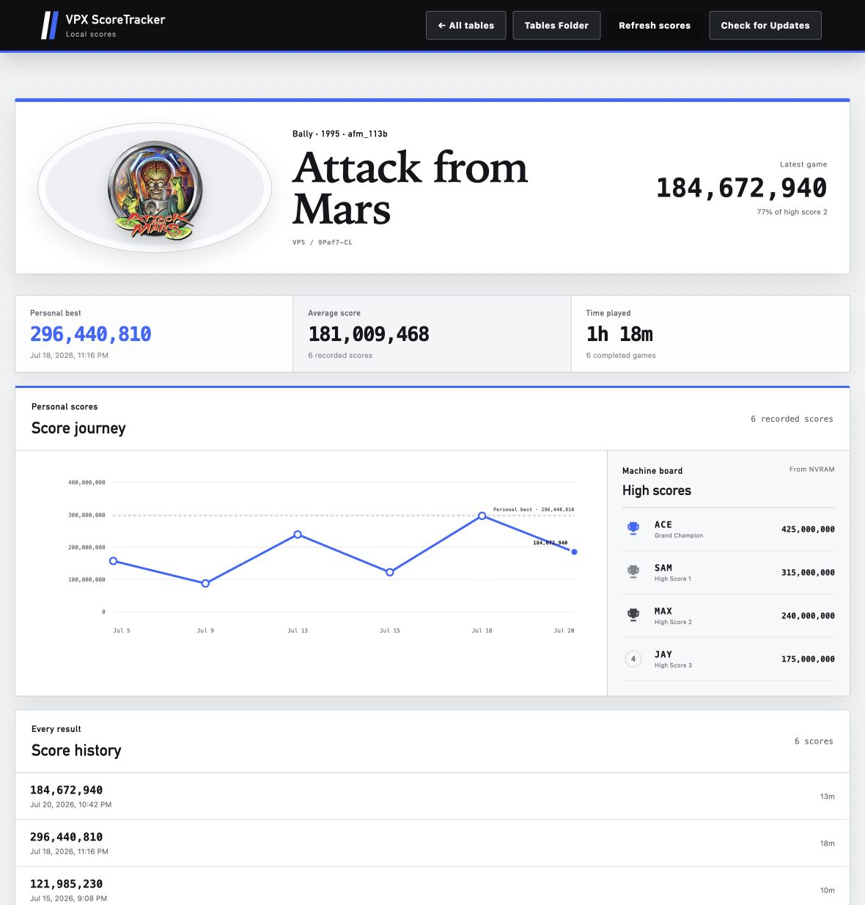

Installation guide
Install it.
Play a table.
Keep the score.
One installer adds the Score Tracker plugin, its NVRAM maps, and the Viewer. Your scores stay on your machine.
Download the latest release
Choose your systemInstallation
Three small steps.
The installer handles the plugin, maps, and Viewer together.
-
01
Get your installer
Choose the installer for your operating system above. It downloads directly from the latest GitHub release.
-
02
Run it
Select your VPX installation and tables folder when prompted. The installer places everything where it belongs.
-
03
Finish a game
Play a supported PinMAME table through game over. Score Tracker records the result automatically.
Linux: make the downloaded installer executable before opening it:
chmod +x scoretracker-installer-linux-*
Enable or disable: in VPinballX.ini, use
[Plugin.ScoreTracker] with Enable = 1 or Enable = 0, then restart VPX.
The Viewer
Your scores, remembered.
Browse every table at a glance, then open one to follow each score over time.

